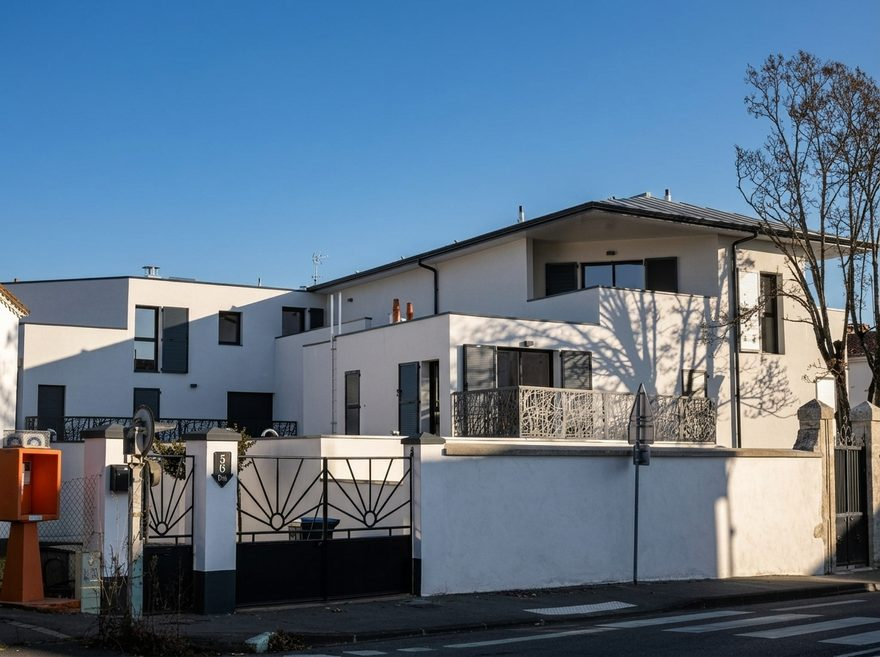

FT2E — chantier motion · maquette d’arbitrage · 2026-08-27
Le style du site est volontairement aride : quatre mouvements, une seule courbe, rien d’autre ne bouge. Pour lui donner le dynamisme demandé sans le dénaturer, chaque piste ci-dessous dit où elle joue, ce qui bouge, en combien de temps — et ce qu’elle ne touche pas. Les pistes sont indépendantes : on peut en retenir une, deux, trois ou aucune.
Chaque démonstration se rejoue. Tout est posé d’emblée si votre système demande la réduction des animations.
piste 1 — la cascade
orchestration du mouvement existant — amendement a11
Aujourd’hui, un bloc se révèle d’un seul tenant à son entrée dans la vue (760 ms, 22 px). La piste : dans les grilles — cartes de références, cellules d’expertises, colonnes de relevé, tuiles de filtres —, les éléments partent en cascade, 80 ms d’écart par rang, mêmes durée et courbe. La page semble se construire, comme un plan se dessine.
aujourd’hui — tout part ensemble
Néréa
AYTRÉ (17440)
Les Minimes
LA ROCHELLE (17000)
EHPAD
SAINTES (17100)
Yachtman
LA ROCHELLE (17000)
Marans
MARANS (17230)
Fougerou
SAINTE-MARIE-DE-RÉ (17740)
piste — cascade de 80 ms par rang
Néréa
AYTRÉ (17440)
Les Minimes
LA ROCHELLE (17000)
EHPAD
SAINTES (17100)
Yachtman
LA ROCHELLE (17000)
Marans
MARANS (17230)
Fougerou
SAINTE-MARIE-DE-RÉ (17740)
| Où | les grilles et listes significatives, sous la ligne de flottaison seulement — références, expertises, relevés, filtres, équipe |
|---|---|
| Ce qui bouge | opacité et translation 22 px — les propriétés du mouvement existant, rien de nouveau |
| Durée · courbe | 760 ms, courbe unique, délai de 80 ms par rang plafonné au sixième (au-delà, tout suit le dernier rang) |
| Ne touche pas | le hero et tout ce qui est visible au chargement (posé d’emblée, protection du LCP conservée) ; les survols ; les durées |
piste 2 — le cliché qui répond
variante a : sans levée d’interdit · variante b : amendement a12
Les photographies du site (coupe des secteurs, tuiles de filtres, cliché du hero) sont les seules surfaces qui peuvent « répondre » au survol sans toucher au texte ni aux filets. Deux variantes, cumulables ou exclusives — jamais sur un dessin de planche, dont les filets de 1 px interdisent toute mise à l’échelle.
variante a — le voile se lève

Petit collectif — LogementsAu repos, un voile d’encre à 14 % ; il se lève au survol (300 ms). Seule une opacité bouge — aucun interdit levé, cousin du dévoilement déjà en place sur les filtres.
variante b — micro-échelle dans le cadre
Le cliché passe à l’échelle 1,025 en 400 ms, dans un cadre strictement fixe : équerres et cartouche ne bougent pas. Lève ponctuellement « aucun déplacement au survol » — au précédent de l’amendement A10.
| Où | les photographies en cadre — coupe des secteurs, tuiles de filtres, cliché du hero. Jamais les planches ni leurs vignettes |
|---|---|
| Ce qui bouge | a : l’opacité d’un voile d’encre · b : l’échelle du cliché seul (1,00 → 1,025) |
| Durée · courbe | a : 300 ms · b : 400 ms — courbe unique |
| Ne touche pas | le cadre, les équerres, le cartouche, le duotone, les dessins de planches, les textes |
piste 3 — la continuité
enrichissement du fondu existant — amendement a13
Aujourd’hui, chaque navigation interne est un fondu uniforme de 300 ms. La piste : la page entrante fond en montant de 12 px (350 ms), et sur le trajet carte → fiche de référence, le visuel voyage — la boîte d’image de la carte devient le bandeau de la fiche, le reste fond. Aucun effet au premier chargement : le LCP n’est pas concerné.
démonstration — cliquer une carte, puis revenir
La démonstration emploie l’API View Transitions du navigateur — la même que le site (Astro). Sur un navigateur qui ne la porte pas, la bascule est immédiate, comme sur le site.
| Où | toutes les navigations internes (fondu montant) ; le voyage du visuel sur le seul trajet carte → fiche et son retour |
|---|---|
| Ce qui bouge | l’opacité et 12 px de translation de la page entrante ; la boîte du visuel entre ses deux positions |
| Durée · courbe | 350 ms, courbe unique |
| Ne touche pas | le premier chargement (LCP intact), l’en-tête et le pied de page, le contenu des planches |
option 0 — le filet de flux
mouvement déjà charté — retiré en août sur votre demande
Le système possède un cinquième mouvement, aujourd’hui débranché : un filet vertical qui « câble » les sections de l’accueil et se dessine une fois au chargement (900 ms), un nœud carré à chaque frontière. Il avait été retiré lors des retouches d’août. Si le site doit gagner en dynamisme, c’est le candidat le plus naturel — il existe, il est dans la charte, il ne demande aucun amendement. À vous de dire s’il revient.
le tracé se dessine, les nœuds se posent à son passage
01 — relevé
Dix-sept années d’exercice, sept personnes, quatre champs d’ingénierie.
02 — identité
Un bureau d’études né en 2008, toujours à La Rochelle.
03 — secteurs
Sept secteurs, une coupe — du logement au patrimoine.
04 — expertises
De l’audit à la réception, un interlocuteur unique.
| Où | l’accueil (marge gauche des sections 01 à 07) — au bureau seulement, la marge n’existe pas au téléphone |
|---|---|
| Ce qui bouge | le tracé d’un filet de 1 px (une fois par chargement), l’opacité des nœuds |
| Durée · courbe | 900 ms, courbe unique — la spécification existante, inchangée |
| Ne touche pas | rien d’autre : purement décoratif, masqué aux lecteurs d’écran, aucun suivi du défilement |
Ce que cette maquette ne décide pas : les pistes retenues seront consignées en amendements A11+ au registre de la charte, puis implémentées avec la réduction de mouvement intégrale (tout posé d’emblée), le repli sans JavaScript, et la mesure avant/après des budgets de performance — le premier rendu de l’accueil est au seuil et ne sera pas retardé.